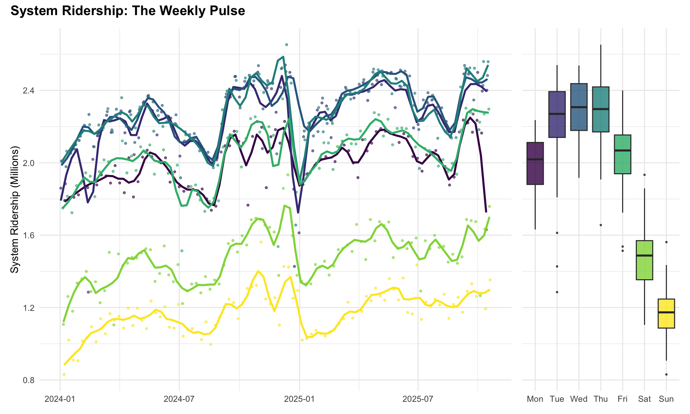
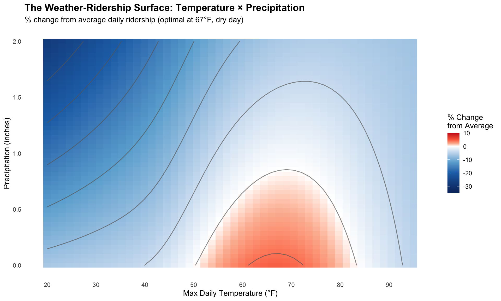
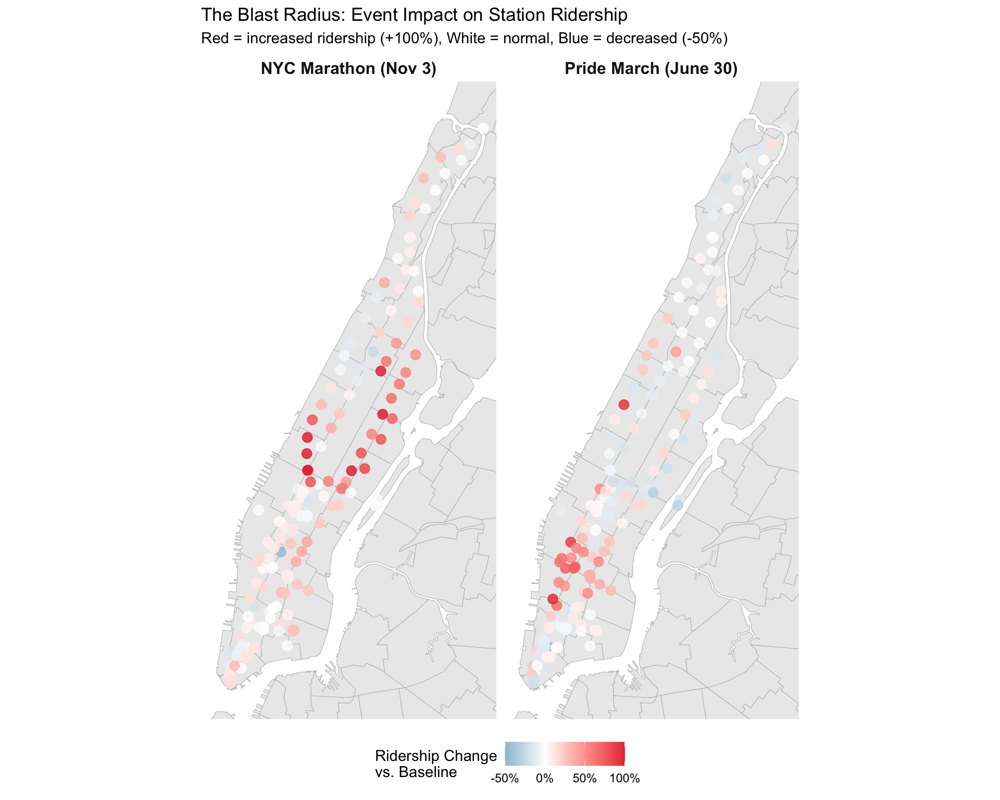
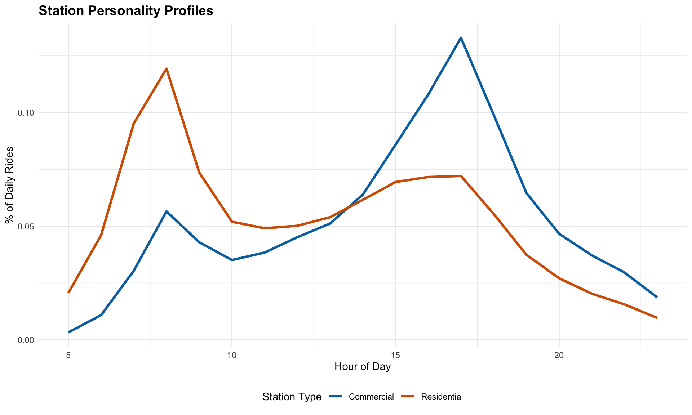
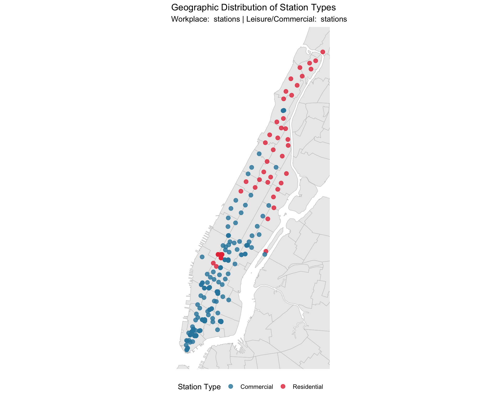
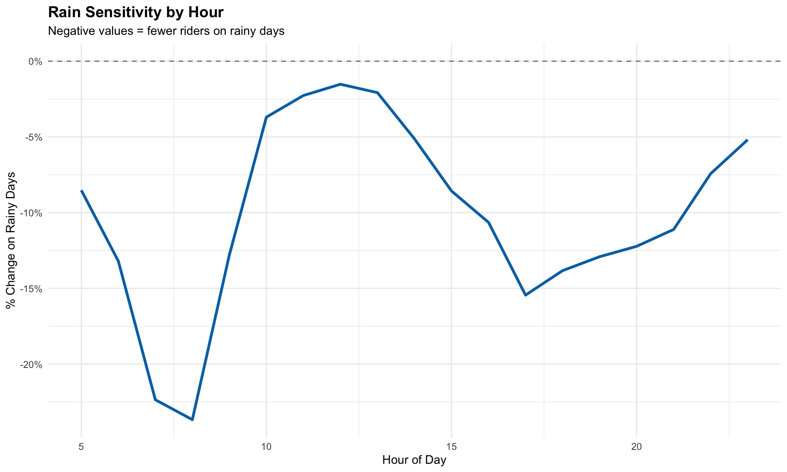

Project Report: The Pulse of NYC: Weather, Events, and the Subway
William M. Donovan (wd2328), Hantang Qin (hq2229), Yongyan Liu (yl6107), Yijun Wang (yw4664), Heng Hu (hh2648)
December 2025
Motivation
New York City runs on the subway. For millions of residents, it is the primary lifeline to work, education, and leisure. However, this lifeline is exposed to the elements. As climate change increases the frequency of extreme weather events—from blistering heat waves to flash floods—understanding the resilience of our transit system is critical.
Simultaneously, the city is a stage for global events. The NYC Marathon, Pride March, and other cultural phenomena transform the city’s geography for a day. Understanding how these events pulse through the transit network helps in planning and crowd management.
Our goal: To quantify the “pulse” of the city by analyzing how weather extremes and mega-events distort the normal rhythms of subway ridership.
Initial Questions
We started with broad questions that evolved into specific “data stories”:
- Original Question: How does weather affect
ridership?
- Evolved into: Is there a “Goldilocks” temperature zone where ridership is maximized? How much does ridership drop during freezing cold vs. extreme heat?
- Original Question: Do events increase ridership?
- Evolved into: What is the “Blast Radius” of a mega-event? Do effects ripple across the borough, or are they hyper-localized?
- Original Question: Are all stations affected
equally?
- Evolved into: Can we cluster stations by their “personality” (Commuter vs. Tourist) and determine which types are most “fair-weather” friends?
Data
We synthesized data from four disparate sources to build a comprehensive Station-Hour and Station-Day panel for 2024-2025.
Part 1: Data Sources
1. MTA Subway Hourly Ridership:
The backbone of our analysis. We processed over 1.9 million hourly records for 123 Manhattan stations.
The Disaggregation Challenge:
The MTA ridership dataset is highly granular, designed to capture detailed fare collection patterns. Each hourly observation is disaggregated by:
- 11+ fare class categories: Full Fare, Senior/Disabled, Students (K-12 and college), Fair Fares (reduced-income riders), and various pass types (7-day, 30-day, unlimited)
- 2 payment methods: MetroCard (legacy magnetic stripe) and OMNY (contactless tap-to-pay)
This level of granularity results in substantial data volume. For Manhattan’s 123 stations over a single week:
123 stations × 24 hours × 7 days × 11 fare categories × 2 payment methods = 227,304 records per week
For the full 2024–2025 period (approximately 95 weeks), this expands to roughly 21.6 million records—far exceeding the Socrata API’s 100,000-record pagination limit and creating file sizes that are impractical for routine analysis.
Our Solution:
Since our research questions focus on total ridership rather
than fare type breakdowns, we utilized the Socrata API’s server-side
aggregation functionality. By applying SUM() with
$group (listed below), we aggregated across all fare types
and payment methods prior to data transfer.
# API aggregation code
"$select" = "transit_timestamp, station_complex_id, station_complex,
borough, SUM(ridership) as total_ridership"
"$group" = "transit_timestamp, station_complex_id, station_complex, borough"This approach reduced the dataset size by approximately 96% (from 21.6M to 1.92M), making monthly downloads feasible within API limits while preserving the station-hour granularity required for our weather and event analyses.
The final dataset comprises 1,921,163 hourly observations across 123 Manhattan stations spanning from 2024-01-01 to 2025-10-19.
2. NOAA Weather Data (Central Park):
Daily weather data were obtained from NOAA’s Global Historical Climatology Network (GHCN) via API access using an authentication token. Central Park was selected as the representative location to provide consistent weather measurements applicable across all Manhattan stations.
The dataset contains 2,151 daily observations for the period 2020–2025, including maximum temperature, precipitation, and snowfall.
3. NYC Permitted Events:
The NYC Permitted Event Information – Historical dataset (bkfu-528j) provides comprehensive records of permitted events. However, it also includes a large number of small-scale activities (e.g., youth sports, film shoots, farmers markets) that are unlikely to significantly influence subway ridership.
Filtering Strategy:
Since the dataset lacks attendance information, we applied a proxy-based approach to identify large events (estimated ≥ 100 participants) using event characteristics:
- Event types: Parades, Athletic Races/Tours, Street Events, Block Parties, Sidewalk Sales
- Street impact: Events requiring full street closures
- Exclusions: Youth/adult sports leagues, production events, small farmers markets
This filtering reduced the dataset from approximately 2 million total events to 149,524 large-scale events across NYC from Jan 2024 to Oct 2025, including 53,977 in Manhattan.
4. Geospatial Data:
Station coordinates allowed us to map the “Blast Radius” of events and visualize the spatial patterns. As these coordinates are embedded within the ridership dataset, we extracted unique station complexes with their associated coordinates directly from the ridership API, eliminating the need for a separate geospatial source.
We identified 427 unique station complexes across NYC, with 123 in Manhattan covering the entire borough from Battery Park to Inwood.
Part 2: Data Wrangling
Our data wrangling process transforms raw inputs into structured panels suitable for analyzing subway ridership, weather conditions, and major NYC events. We began by ingesting raw datasets, standardizing column names, parsing timestamps, and filtering records to Manhattan for the 2024–2025 study period.
The next step involved constructing the station-hour panel dataset
(panel_station_hour), which served as the primary unit of
analysis. For each station-day, we computed hours_present to identify
potential gaps in hourly ridership data. For analysis requiring daily
granularity, such as heatwave impact assessments, we aggregated
ridership to the station-day level (panel_station_day).
Weather features were integrated by merging daily observations and
creating binary indicators for extreme conditions. Specifically, we
defined heatwave as periods with maximum temperatures ≥ 90
°F for consecutive days and storm as days with
precipitation ≥ 1 inch. Event data underwent geocoding and spatial
matching: large-scale Manhattan events were filtered, addresses were
geocoded, and events were spatially joined to stations within an
800-meter radius to flag affected station-hours and station-days.
To account for altered ridership patterns on U.S. federal holidays,
we incorporated holiday flags using the timeDate package.
Finally, we calculated baseline ridership as the median for each station
by day-of-week and month, capturing weekly and seasonal trends for
percent-change analysis.
Exploratory Analysis
Our initial exploration revealed strong temporal and spatial patterns across our four datasets.
Ridership Patterns for Manhattan
Given that complete data is available for the entire year of 2024 (with 2025 data currently covering only January through October), the exploratory analysis focuses on 2024 to provide a comprehensive annual perspective. The top 30 stations account for a substantial share of total ridership and exhibit clear geographic clustering around major transit hubs (such as Times Square, Grand Central, Penn Station) and Midtown, underscoring their roles as the core of Manhattan’s transit network. Overall, ridership in 2024 remained relatively stable throughout the year, with noticeable declines during major holidays and occasional short-term fluctuations. Hourly ridership profiles reveal distinct behavioral patterns between weekdays and weekends: weekdays display the characteristic “two-humped camel” shape, reflecting pronounced peaks during morning and evening commute periods, while weekends feature a broad, single midday peak, indicative of more leisure-oriented travel behavior.

System ridership exhibits a clear weekly rhythm, as shown in the time series and boxplot visualizations. Daily ridership fluctuates between approximately 0.8 million and 2.5 million trips, with consistent weekday peaks and weekend troughs. Monday through Friday maintain relatively high and stable volumes, with midweek days—particularly Wednesday and Thursday—showing the highest median ridership. In contrast, Saturday and Sunday experience significant declines, reflecting reduced commuting activity and a shift toward leisure travel. Seasonal trends are also evident, with overall ridership rising during summer months and dipping around major holidays and early January. These patterns underscore the strong influence of workweek structure and seasonal factors on transit demand.

Weather Analysis for Central Park
Time series plots of temperature and precipitation reveal typical seasonal variability, characterized by summer heat waves and winter cold snaps, alongside precipitation events distributed throughout the year. Seasonal summaries further highlight these patterns: average temperatures peak in summer and reach their lowest in winter, while spring exhibits the highest frequency of storm events (≥ 1 inch precipitation). Heat days (≥ 90 °F) are concentrated in summer, reflecting periods of extreme warmth, whereas significant precipitation events occur across all seasons, with notable clustering in spring. These findings underscore the interplay between temperature extremes and precipitation variability in shaping seasonal weather dynamics.

Large Permitted Events: Temporal and Typological Patterns
Analysis of large permitted events reveals pronounced seasonality, with activity peaking in summer and fall and reaching its lowest levels during winter months. This trend aligns closely with New York City’s outdoor event calendar, where favorable weather conditions drive higher event volumes in warmer seasons. In terms of event composition, block parties, street fairs, and athletic events dominate Manhattan’s large-event landscape, reflecting the borough’s emphasis on community engagement and recreational activities.

Spatial Distribution of Ridership
Mapping total ridership by station reveals a clear spatial concentration of transit activity within Manhattan. The highest ridership levels are observed in Midtown and the Financial District, reflecting their roles as major employment and commercial hubs. Ridership intensity declines progressively toward Upper Manhattan neighborhoods, indicating a strong centralization of transit demand around core business and tourism areas. This spatial pattern underscores the importance of Midtown and Downtown stations in sustaining overall system performance and highlights geographic disparities in transit utilization.

Formal Statistical Analysis
Building on the exploratory patterns above, we developed four targeted statistical analyses to quantify weather and event impacts on ridership.
Story 1: The Goldilocks Zone
To examine whether subway ridership peaks within a comfortable temperature range, we modeled the relationship between weather conditions and ridership using a Generalized Additive Model (GAM). This approach captures non-linear effects while controlling for other factors such as day of week and month:
\[ \begin{aligned} \text{Ridership} \sim & \; s(\text{Temperature}) \\ & + s(\text{Precipitation}) \\ & + s(\text{Snowfall}) \\ & + \text{Day of Week} + \text{Month} \end{aligned} \]
The heatmap below illustrates the combined influence of temperature and precipitation on ridership, expressed as percentage change from the average, holding other factors constant.

Key Findings
Optimal Zone (Bottom Center, Red): Ridership peaks 4–6% above average on mild, dry days around 67 °F, confirming the “Goldilocks” hypothesis. These conditions are most conducive to walking to stations.
Cold + Wet (Upper Left, Deep Blue): Ridership declines sharply—20–35% below average—under frigid, rainy conditions, as commuters avoid uncomfortable outdoor travel.
Hot Days (Bottom Right): Even on dry days, temperatures above 85 °F reduce ridership by 3–5%, suggesting heat discourages discretionary trips.
Precipitation Effect (Moving Up): Each inch of rainfall corresponds to a 5–10% decline in ridership, regardless of temperature. Contour lines indicate precipitation exerts a stronger marginal impact than temperature; for example, a half-inch of rain reduces ridership more than a 20 °F swing within the moderate range.
These results underscore the importance of weather resilience strategies for transit systems, particularly in mitigating the impact of precipitation.
Story 2: The “Blast Radius” of Mega-Events
To assess whether major events influence ridership citywide or primarily along event routes, we analyzed two iconic 2024 events: the NYC Marathon (November 3) and the Pride March (June 30). For each station, event-day ridership was compared against a baseline of typical Sundays, defined as the median of all non-holiday Sundays in surrounding months. The results were mapped to visualize percentage changes geographically.

Key Findings
NYC Marathon: Ridership surged at stations near the finish line (Columbus Circle, 59 St) and along the route through the Upper East Side and Harlem. Conversely, some stations adjacent to closed streets experienced declines due to restricted access.
Pride March: The impact was highly concentrated in the West Village and Chelsea, with ridership spiking by more than 50% at stations such as Christopher St–Sheridan Sq and 14 St. Midtown stations remained largely unaffected, indicating a concentrated effect.
These patterns confirm that the “Blast Radius” is real but geographically distinct. Event planning could benefit from station-specific service adjustments rather than system-wide changes, ensuring resources are allocated where demand shifts most significantly.
Story 3: Station Personality Profiles
To assess whether subway stations exhibit uniform usage patterns, we applied K-means clustering to hourly ridership profiles. This analysis identified two distinct station archetypes based on temporal demand. Notably, the geographic distribution of these clusters echoes the clustering results remarkably well—stations of the same type tend to cluster spatially, reflecting the underlying land use patterns of Manhattan neighborhoods.


Key Findings
Residential Stations (43 stations): Residential stations (red) are primarily located in the Upper West Side, Upper East Side, and uptown, exhibiting strong morning peaks as commuters begin their day.
Commercial Stations (112 stations): Commercial stations (blue) dominate Midtown and Lower Manhattan, including major hubs such as Grand Central, Bryant Park, Rockefeller Center, and the Financial District. These stations show a gradual buildup throughout the day, culminating in a pronounced evening peak between 5:00–7:00 PM, with elevated activity persisting into late evening due to departures from offices, restaurants, and entertainment venues.
Notable Exceptions in Midtown: A few red stations in Midtown—such as Penn Station and Times Square—display morning-peak patterns not because they are residential, but because they serve as major entry points for commuters arriving from New Jersey and Long Island. Roosevelt Island is a true residential neighborhood, reinforcing this classification.
Unique Uptown Commercial Station: 168 St stands out as the only Commercial station in Uptown Manhattan. Its profile reflects its role as a major transfer hub and destination for medical facilities, distinguishing it from surrounding residential stations.
Special Case: Roosevelt Island: Roosevelt Island includes two stations—Roosevelt Island (F) and Roosevelt Island Tramway—that fall into different clusters. The F train station behaves like a Residential station, with strong morning peaks as residents commute to Manhattan. In contrast, the Tramway shows a Commercial-like pattern, with higher activity later in the day, likely driven by visitors and leisure trips.
Story 4: Rain Sensitivity by Hour
To understand how precipitation affects subway ridership throughout the day, we analyzed hourly patterns of ridership change on rainy days relative to dry-day baselines. This analysis highlights when commuters are most likely to alter their travel behavior in response to adverse weather.

Key Findings
Morning Commute Most Impacted: Ridership declines sharply during the morning peak (7:00–9:00 AM), with reductions of 20–30%. This suggests that commuters facing strict arrival deadlines are more likely to switch to alternatives such as taxis, rideshares, or remote work when rain occurs.
Afternoon and Evening Less Sensitive: Ridership drops are smaller in the afternoon and evening (approximately 5–18%), reflecting greater flexibility among travelers to delay trips until conditions improve.
Operational Implication: The MTA should anticipate reduced demand during the morning rush on rainy days and consider adjusting service levels accordingly, while maintaining relatively stable service during later periods.
Discussion
Our study examined how weather conditions, major events, and station characteristics influence subway ridership in Manhattan. The findings confirm that ridership is highly context-dependent. Mild, dry days correspond to peak demand, while extreme temperatures and precipitation significantly reduce ridership, with rain exerting the strongest marginal effect. Large-scale events such as the NYC Marathon and Pride March create localized surges near event routes rather than system-wide disruptions. Station-level analysis revealed distinct “personalities”: residential stations peak sharply in the morning, while commercial stations peak in the evening and maintain elevated activity later into the night. Additionally, rain sensitivity varies by hour, with the steepest declines during the morning commute, suggesting that time-of-day flexibility influences behavioral responses to adverse weather.
These results largely align with expectations but provide some nuanced insights. For example, the magnitude of morning ridership decline on rainy days—up to 30%—was greater than anticipated, and the strong clustering of event impacts challenges assumptions about citywide disruption. These patterns underscore the need for targeted operational strategies, such as adjusting service during rainy mornings and event corridors, and incorporating station-specific profiles into demand forecasting models.
Several limitations should be acknowledged. Firstly, due to data size limitation, our analysis was limited to Manhattan; patterns in outer boroughs may differ significantly and could reveal additional commuter dynamics. Secondly, the “Permitted Events” dataset is inherently noisy, requiring manual curation to isolate major events and filter out smaller activities such as block parties. Finally, weather data was sourced from a single location (Central Park), which may not fully capture microclimate variations across Manhattan.
In summary, this project explored how extreme weather conditions and large-scale events reshape the rhythms of New York City’s subway system. By integrating ridership, weather, and event data into a unified analytical framework, we uncovered clear patterns: ridership peaks under mild, dry conditions, declines sharply during storms, and responds in highly localized ways to major events. Our findings highlight the importance of weather resilience and event-specific planning for urban transit systems. While the analysis was limited to Manhattan and relied on certain data simplifications, the approach demonstrates the value of combining temporal, spatial, and contextual factors to understand and manage complex urban mobility dynamics.
Acknowledgment
This project was completed as a final project for Data Science I (P8105). We gratefully acknowledge the guidance and feedback provided by Professor Jeff Goldsmith, as well as the instruction and support from all TAs throughout the course, including Xiaoni Xu, whose suggestions and assistance were particularly valuable for this project.

P8105 Data Science I | Fall 2025
Columbia University Mailman School of Public Health
Department of Biostatistics